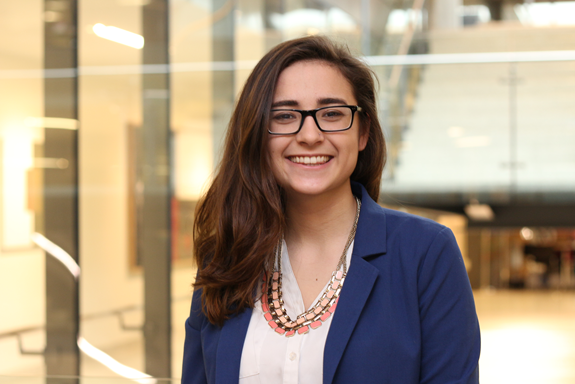
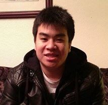
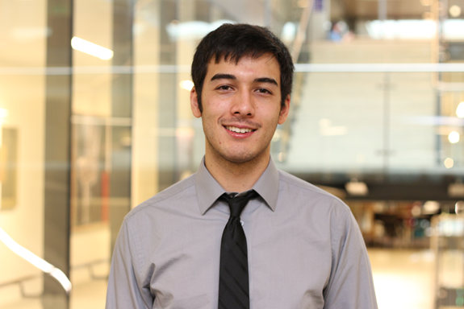
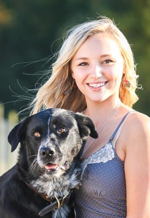
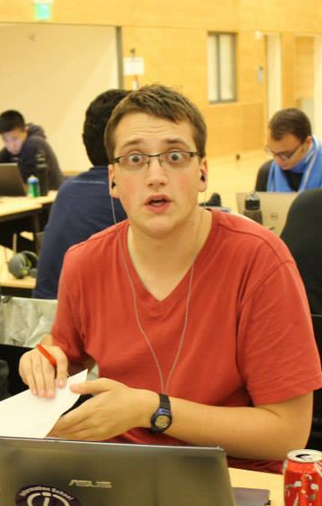
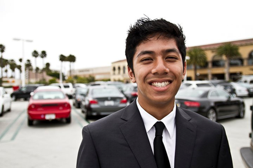

Daniel Sebring, President
I'm accepting the nomination for the role of president because there's nothing more important to me than Informatics and the Informatics family. The exceptional students, professors, and staff mean so much to me and I want to do anything I can to further improve our status at UW and in the local tech community, while working to keep up the tradition of bringing the major closer together for a more enriching college experience and connections that extend beyond our limited time in school. I want to keep up the good work and build on the foundation laid by our fantastic current executive board, and make sure the Informatics program grows even more relevant, more useful, and of course- more fun. Thank you.
Allison Amaral, Vice President
Just a short two weeks ago, I celebrated the anniversary of the day I fell in love with Informatics- Winter Quarter Game Night of my sophomore year. That night planted the seed in my head that not only did I have to join this wonderful group of people, but I also knew that I wanted to be the voice of everyone from the dedicated designer to the peppy PM. So at my first opportunity, I applied to be a First Year Representative and was absolutely thrilled to get a chance to have a step in that direction. As I met more people, even though I had been excited about the major before, I came to not only see how great it was, but also how much potential this group of people had. We’re the future of technology, and carry some of the most passionate designers, developers and thinkers out there. As Vice President, I know it would be my duty to not only foster this talent in our major, but also to show everyone else at UW, Seattle and the tech field what amazing things we will bring to the table. I plan on delivering this in a few ways first and foremost by focusing on freshman-oriented events. For example, Informatics info sessions and panels advertised in classes that freshman who are interested in tech related fields but may not yet have direction would attend. Also, working together with other tech fields (yes, even CSE) to create a presence to lost freshmen who haven’t found us yet. Additionally, to bring the greater community in, I plan on using some connections I have built at Microsoft from my internships, and establishing a list of connections of those within our major to create events to teach businesses we are exactly what they have been looking for all of these years. I am honored to accept my nomination for Vice President of IUGA, and look forward to getting the chance to surprise you guys day in and day out with what I plan on bringing to the table. Thank you.
Kevin Yan, Director of Public Relations
Last quarter, I ran for the first year representative position with one goal: to be the bridge between incoming first years and the Informatics community. This quarter, I am running for Director of Public Relations with greater goals in mind: to unify our major as a family and make our years here a time to remember. I know I’m not alone when I say that two of the best parts of being in informatics (excluding my raps) are the awesome IUGA swag sales and the many events we host so that we can interact and bond. As a candidate for the Director of PR, I understand just how important our brand and our events are to the major. I also understand that to be able to represent us, I must have your interests and feedback in mind. To accomplish this, I plan to assemble and lead a marketing team comprised of our finest with the purpose of designing sick new swag (that awesome scarf, anyone?). Likewise, IUGA events will be open to suggestion and heavily influenced by popular demand (mint chip ice cream is king). The truth is, after only a quarter and a half of being in major, I genuinely know that the iSchool is much more than just our school; it’s our home. The people I’ve met and the experiences I’ve had thus far are priceless, and I would love nothing more than to share these moments and create new ones with the rest of the major and next year’s cohort. I am Kevin Yan, and I sincerely hope that you put your faith in me to make our time unforgettable; I won’t let you down.
Vikram Thirumalai, Director of Public Relations
I want to hold this position because I honestly love the ischool and I always wonder how I can use my skills to benefit the school and my peers. I am very good at planning events with my friends and connecting the group together, and I believe I would be able to communicate announcements with the association very well and represent the school very well. This being said I can also coordinate the social events for the ischool from my skills doing this as vice president of the rocketry club in High School, i mean its not rocket science (HA HA). I already know a few individuals I would elect for my marketing team to make sure the ischool maintains its brand and keeps a good social media presence. I think i would be good at this because my organization and time management skills will be put to good use being on the board of IUGA. The most important reason I feel like i would be a good fit for this position is that I am sociable and love meeting people, especially informatics students and as a director of public relations I am sure it will be necessary to have many conversations with those in my cohort and in the year below me and my motivations come from my natural interests in the department.
Harry McDonough, Director of Finance
 When I applied to the Informatics program last year, what I looked forward to the most was joining the iSchool community. For me, the major has always meant much more than just a degree. It’s an opportunity to come together with my classmates to create something unforgettable. IUGA has been a great facilitator for these connections. From the networking nights to the game nights to the first year events, I’ve been able to meet and spend time with some great people. Additionally, working as a first year representative has given me experience planning these events and appreciation of them.
When I applied to the Informatics program last year, what I looked forward to the most was joining the iSchool community. For me, the major has always meant much more than just a degree. It’s an opportunity to come together with my classmates to create something unforgettable. IUGA has been a great facilitator for these connections. From the networking nights to the game nights to the first year events, I’ve been able to meet and spend time with some great people. Additionally, working as a first year representative has given me experience planning these events and appreciation of them.
It is because of these experiences that the Director of Finance isn’t just a position to me— it’s a commitment. Not only to maintaining the financial accounts of IUGA, but to continue building the iSchool community. I want to work with the Director of Public Relations to consistently provide as many opportunities to IUGA members as possible. More iSchool apparel orders, career information sessions and after school events are all on my list. I also want to coordinate with the Director of Outreach to fiscally secure these events through outside sources. Getting company sponsors for game nights, guest speakers for our information sessions, and company tours are all ways I want to continue to extend the breadth of opportunities that IUGA provides. The chance to manage IUGA’s budget and fundraising efforts offers ways to promote growth in my community, something I am passionate about. I don’t want this position to just count numbers on a spreadsheet—I want it to count numbers that matter. Numbers, ledgers and estimates that let us come together and continue to build on the amazing environment we have at the iSchool.
Jason Hama, Director of Finance
I believe that I would make a good director of finance because I have a bit of experience with finance from an accounting course. I have good organizational skill to help get all of my duties done. But most of all I would like to try this new experience and benefit IUGA.
Austin Woerhle, Director of Outreach
I think I would make a great Director of Outreach because I have been part of the informatics/IUGA community since the Summer of 2012. I am extreme passionate about the informatics community as it has provided so many opportunities for me, and I would like to return those opportunities to my peers. My excitement for informatics shows every time I talk about our program. I absolutely love telling people about the things we do and how great of an opportunity the technology world is. I am currently a TA for INFO 101 and in my time (this year and next) I will have had 700+ students that I will interact with. I have had many friends that went through the program and now are working at great companies companies, these are the type of current connections I will leverage. I believe I will be could be an awesome representative of our program to prospective students/alumni/and companies.
Linnea Watson, Director of Operations
I believe I would make a great Director of Operations because of my reliability and ability to keep tasks on track. I would love to take responsibility for this position because I believe I would excel at providing stable and trustworthy documentation of IUGAs goals and principles. I am extremely excited to be a part of IUGA, and am looking forward towards adding a honest, dependable, and sincere outlook to the Informatics Undergraduate Association.
Hiram Munn, Director of IT
I want to be the Director of IT because I want to see IUGA succeed in providing opportunities for students to learn new and useful skills and technologies, and the best way I think I can help make this happen is as the Director of IT. Through my experience as a first year representative I have already worked extensively with the current executive board and the iSchool IT department in getting our organization's website back online and our game night server back up and running. This experience has provided me with valuable insight into the existing technologies currently leveraged by IUGA and I know that in this role I can expand on what is already there. So please think of me for IT and thank you for your time and consideration.
Jill Lopez, Director of Diversity Efforts
 Hello! My name is Jill Lopez and I am accepting the nomination for the Director of Diversity Efforts for IUGA. I’m excited to be nominated, especially for an important role such as this.
Hello! My name is Jill Lopez and I am accepting the nomination for the Director of Diversity Efforts for IUGA. I’m excited to be nominated, especially for an important role such as this.
There are a lot of responsibilities involved to being the director of diversity efforts. From planning events to being a part of various committees…however, I believe that the most important responsibility is to help foster diversity and help others engage in diversity-related topics or challenges. The Director of Diversity Efforts is a role full of important duties. All of which I am ready, and excited, to take on. I want to be the Director because I want to be at the forefront of helping foster diversity within the Informatics. I would like to be part of group that can create and implement changes that ensure that our school is full of students from different backgrounds. This role is most than just being part of a student organization. For me, this role is about creating an environment where everyone feels valued and supported and help create opportunities for others.
I would be a good fit for this role for various reasons. I am part of the Information School’s Diversity Committee Board. Being a part of this board has exposed me to several insights on how much work is involved to plan events, what kinds of events the committee wants to do, and how to create events that will be educational for everyone. Most importantly, this board has showed me how diversity can help us become more open and learn new perspectives from others.
Second, I am a volunteer at the Ethnic Cultural Center at the UW campus. I help create boards surrounding the issues of social justice and create resources for cultural RSOs to use in many of their workshops. Lastly, I currently work as a Human Resources student assistant on campus. On a day-to-day basis, I get to communicate with students from various backgrounds and help them get jobs on campus. I have learned that when you help create opportunities at an individual level, it can leave a lasting impression on that person. That being said, I would like to dedicate my time and my skills and apply it as your new Director of Diversity Efforts.
If given the opportunity to be the new Director of Diversity Efforts, I will support my peers and prospective students to become successful individuals.
Perry Lin Meas, Director of Diversity Efforts
I seek to serve as Director of Diversity Efforts to address the growing concern of a lack of integration between existing diversity-focused groups and IUGA toward including diverse views and perspectives within our growing Informatics community. Supporting a diverse body of iSchool students will reaffirm that we represent the intersection of information, technology, and above all: people.
Engaging with Women in Informatics (WINFO), iQueeries, and iEquality will be one of my primary steps to help shape the iSchool as an integrated force for advancing the equity, the voice, and the representation of underserved and historically excluded communities. As an ally, I aim to ensure the iSchool as a safe intersectional space for LGBTQQ students, students of color, and students of diverse ability. Expanding diversity-focused events and workshops aimed at creating a visible and vocal community of students from these communities will be of utmost concern. I hope to leverage my experience in AES (American Ethnic Studies), my organizing activities as secretary of the HCDE Student Association, and my experiences in America as a person of color to passionately engage and organize diversity efforts at the iSchool. In addition to supporting current students, I aim to strengthen community outreach efforts for prospective students interested in Informatics who are from underserved communities. Creating an environment where all feel welcome to pursue the study of Informatics will reflect our confidence as a school working at the leading-edge of the study of information, technology, and people.